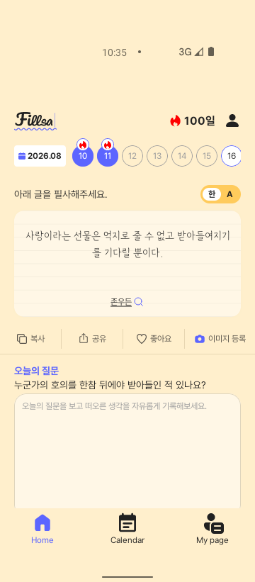
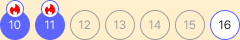
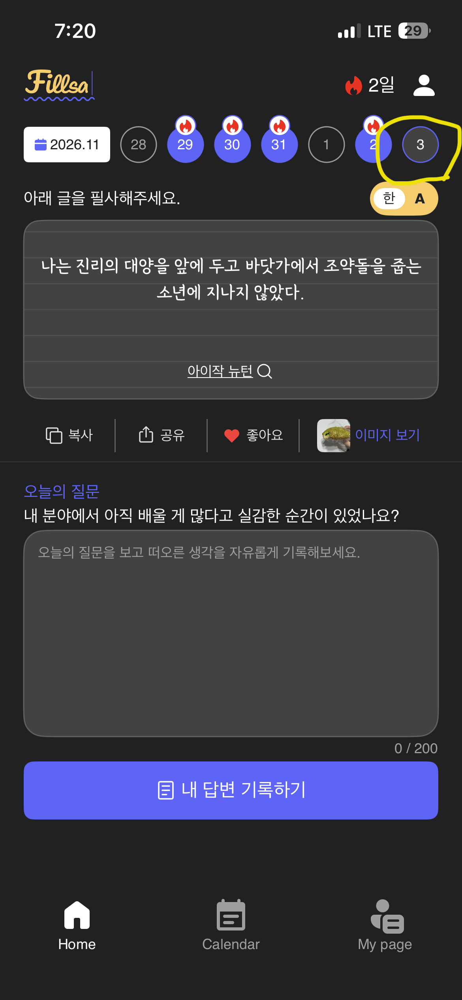

Home > 날짜 영역 > 연속필사 표시안됨
Notion 원본 이슈
| 상태 | Not started | 우선순위 | 중간 |
|---|---|---|---|
| 플랫폼 | iOS, Android | 화면·분류 | Home · 기능 |
제목: “Home > 날짜 영역 > 연속필사 표시안됨”. 본문 블록은 0건입니다.
페이지 본문 첨부는 없습니다. 아래 HEIC는 댓글 첨부이며 원본 사본과 열람용 PNG를 보존했습니다.

Notion 댓글
문제와 재현 조건
댓글 첨부에는 iOS Dark 화면의 11월 3일 선택 원이 표시되고 불꽃이 없습니다. 직전 2일에는 불꽃, 헤더는 2일입니다. Android 실계정 monthly 응답은 확보하지 못해 실제 계정 조건은 재현하지 못했습니다. Debug fixture에 선택일 todayCompleted=true와 주간/월간 값 불일치를 넣어 코드 경계를 검증했습니다.
이슈 원인
확인된 코드 원인 1: 회원 Home이 주간 days[].completed/state로 배지를 판정했습니다. Swagger v2에서 이 값은 일반 필사 완료이며 월간 memberQuotes[].todayCompleted가 날짜별 연속필사 여부입니다. 확인된 코드 원인 2: homeWeekDayPresentation은 isSelected를 먼저 처리하고 HomeWeekStrip은 Completed 변형에서만 불꽃을 그립니다. 따라서 선택된 당일은 연속필사 플래그가 참이어도 불꽃이 숨겨집니다. 서버의 실제 오늘 플래그 및 월 경계 판정 알고리즘은 미확인입니다.
해결방법과 실제 수정
HomeViewModel은 보이는 주간 날짜가 걸친 각 월의 memberQuotes를 조회하고 todayCompleted=true의 quoteDate를 보관합니다. HomeView는 이 날짜 집합을 회원 배지 상태에 전달합니다. 복귀·필사 POST 성공 때 재조회하고 실패 시 확인된 표시를 보존합니다. Debug fixture는 주간 완료와 월간 판정을 서로 다르게 설정했습니다. 사용자 승인 예외에 따라 HomeWeekStrip은 선택 원·숫자를 유지하고 연속필사인 선택일에도 기존 home_complete_badge.svg를 같은 위치에 그립니다. Android는 월 경계의 앞뒤 날짜를 직접 계산하지 않습니다.
- presentation/.../viewmodel/HomeViewModel.kt
- presentation/.../ui/home/HomeView.kt, FigmaHomeContent.kt
- presentation/.../util/ComposeExtension.kt 및 관련 테스트
- 화면 계획·QA 문서
수정 전 · 목표 기준 · 수정 후
AS-IS · 선택일 불꽃 누락




Figma · 목표 기준



TO-BE · 선택일 불꽃 표시


검증 결과
| 검증 항목 | 실행 명령·절차·시각 | 실제 결과 | 증거 |
|---|---|---|---|
| 목데이터·회귀 테스트 | ./gradlew :presentation:testDebugUnitTest :app:assembleDebug --console=plain · 2026-11-03 13:52 UTC | 성공. 월별 true/false, 8→9월 경계, 선택일 불꽃, 복귀·POST·로그아웃 검증 | QA 기록 |
| Debug 빌드 | 같은 Gradle 실행 · 2026-11-03 13:52 UTC | 성공 | app/build/outputs/apk/debug/app-debug.apk |
| 선택일 하위 Preview | android preview render :presentation --fqn=...HomeDateWeekSelectedStreakLightPreview / DarkPreview --component-tree | Light/Dark 렌더 성공. CLI SVG 불꽃 누락, Dark 텍스트 잘림 | Light PNG · Dark PNG |
| 전체 Preview | android preview render :presentation --fqn=...AuditFigma292913556 --component-tree | 렌더 성공. 실제 시스템 바·SVG 확인은 런타임 증거 사용 | PNG · tree |
| 실제 전체 프레임 | adb -s emulator-5556 exec-out screencap -p · API31 360×821 | Light/Dark 10·11·선택 16일 불꽃, 12일 기본 날짜 확인 | Light · Dark |
| 실계정 | Notion 첨부와 코드·목데이터 대조 | Android 실계정 monthly todayCompleted 응답 미확인 | 제보 첨부 |


컴포넌트 결과: 선택 원·숫자와 기존 불꽃의 결합을 Light/Dark 실제 런타임에서 확인했습니다. 선택+연속필사는 사용자가 승인한 Figma 예외입니다. Preview SVG 누락과 Dark 월 카드 텍스트 잘림이 있어 Preview만으로 불꽃을 판정하지 않았습니다. 전체 Home은 Figma 기준과 기존 시스템 바·하단 및 콘텐츠 차이가 남습니다. 기능 목데이터 검증: 통과. 최종 조립 화면 디자인: Blocked.
남은 항목과 다음 행동
- 2026-11-04 재확인: 저장 버튼 완료 후 다이얼로그 확인으로 Home에 돌아오면 월간 데이터를 재조회한다. 목데이터에서 오늘 todayCompleted false→true 반영 테스트 통과. 뒤로가기는 저장 요청 직후 Home으로 이동해 서버 저장과 재조회 순서가 바뀔 수 있으므로 즉시 갱신은 보장되지 않는다.
- 실제 Android 계정의 11월 3일 monthly todayCompleted 및 주간 응답 확인.
- 기존 전체 Home Figma 차이는 해당 화면 QA에서 별도 정리. 이번 선택일 상태는 사용자 승인 예외로 기록.
- iOS 수정과 검증은 이 Android 작업 범위 밖.
SooJi · 2026-11-03 10:26 UTC · comment 40de639f-c7a4-80d5-90e0-001d464b1cba · discussion d74e639f-c7a4-831a-ad33-832c9a039ab3

제보 당시 HEIC 첨부를 PNG로 변환한 사본입니다. 2일에는 불꽃, 선택된 3일에는 불꽃이 없습니다.